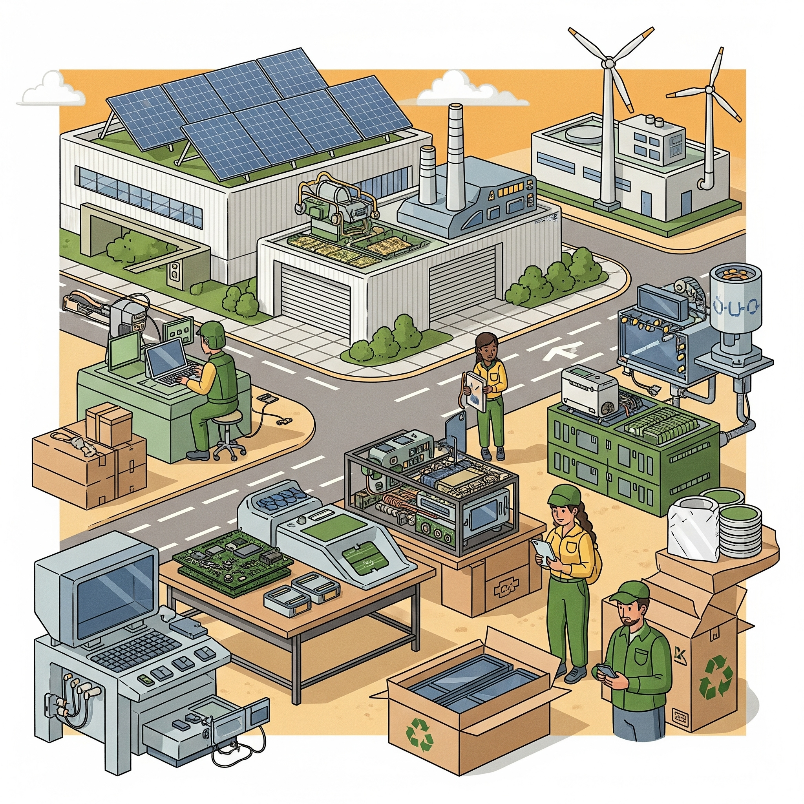

La producción sostenible en la industria tecnológica es fundamental para minimizar el impacto ambiental y fomentar la responsabilidad social. Esto implica utilizar procesos de fabricación que reduzcan residuos, emisiones contaminantes y consumo energético.
Las empresas tecnológicas están adoptando prácticas como el reciclaje de materiales, el uso de energías renovables y la mejora de la eficiencia en la cadena de suministro para asegurar un desarrollo más sostenible.
7. Producción sostenible en la industria tecnológica
En este apartado veremos cómo las empresas tecnológicas pueden adoptar prácticas sostenibles en la fabricación, distribución y reciclaje de sus productos.
Es clave aplicar una visión ética y respetuosa con el medioambiente durante todo el ciclo de vida del hardware y software.
Siguiente